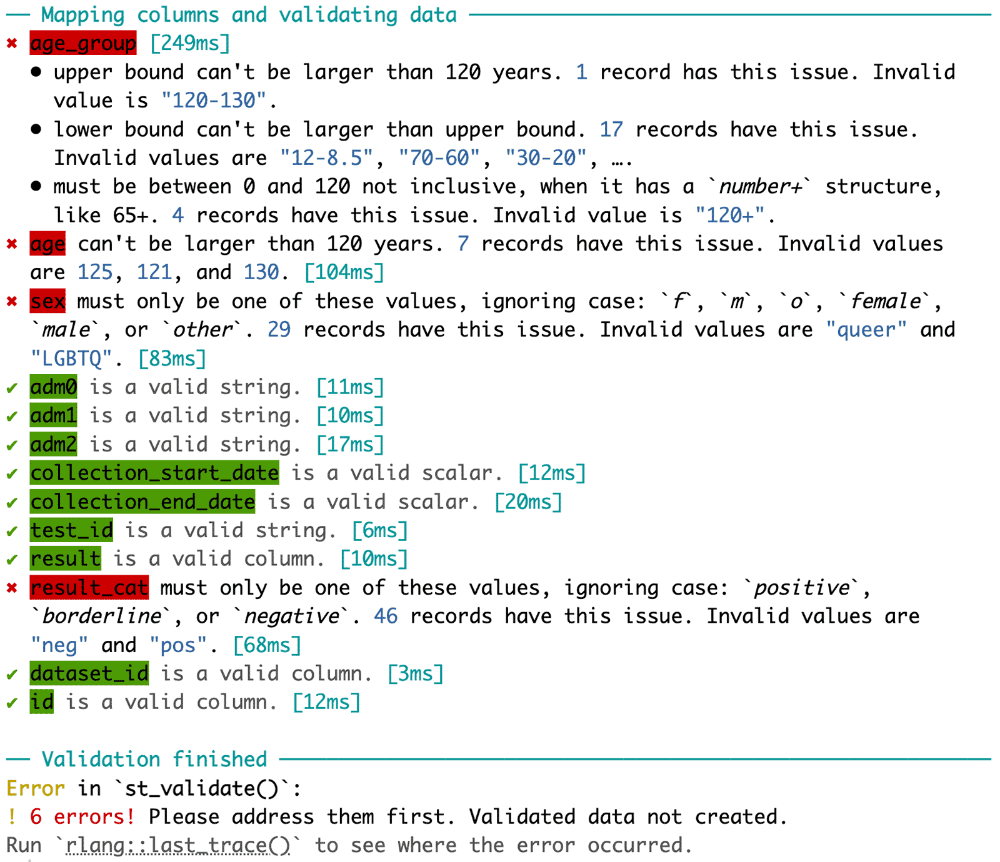
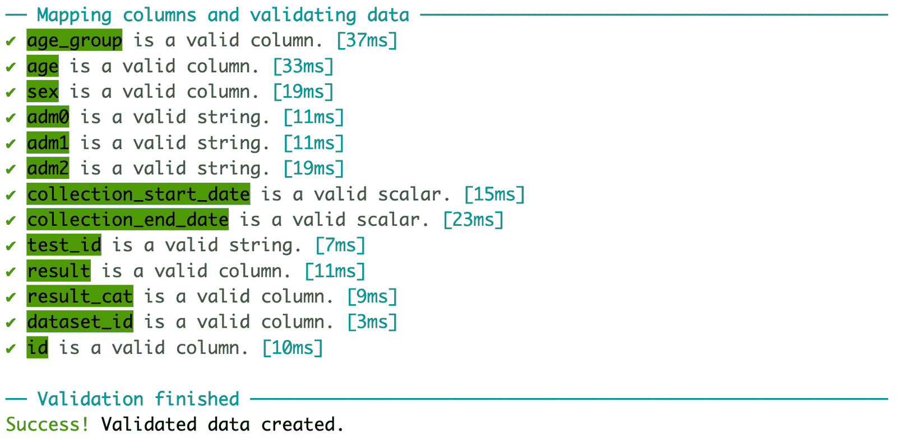

serotrackr helps you prepare your raw data for submission to SeroTracker. We will use a sample raw dataset included in the package to demonstrate the workflow of serotrackr:
library(serotrackr)
library(dplyr)
head(sample_raw_data)#> # A tibble: 6 × 14
#> dataset_id id age_group age sex adm0 adm1 adm2 collection_start_date
#> <dbl> <dbl> <chr> <dbl> <chr> <chr> <chr> <chr> <chr>
#> 1 1 1 12-120 6 m Cana… Albe… 7649… 2009/03/11
#> 2 1 2 12-8.5 NA m Cana… bc 7649… NA
#> 3 1 3 NA 23 o Cana… Québ… 7649… 2008-03-11
#> 4 1 28 0-10 4 other Cana… Albe… Camr… 2006/Jul.9
#> 5 2 33 20-30 22 f Cana… Albe… Calg… 2021|May|33
#> 6 2 65 110+ 119 male Cana… Albe… Banf… 11/January.2006
#> # ℹ 5 more variables: collection_end_date <chr>, test_id <chr>, result <dbl>,
#> # result_cat <chr>, another_col <chr>Here are the steps you should follow:
1) Validate your data
The first step is to use st_validate(). Here, you need
to specify which columns in your data contains the data that is required
for submission. Instead of unquoted column names, you can also provide a
vector of length one for most of the arguments, which would be applied
to all records in your data after validation.
validated_df <- st_validate(
sample_raw_data,
dataset_id = dataset_id,
id = id,
age_group = age_group,
age = age,
sex = sex,
adm0 = regions$adm0$Canada,
adm1 = regions$adm1$Canada$Alberta,
adm2 = regions$adm2$Canada$Alberta$Calgary,
collection_start_date = "2023-01-01",
collection_end_date = "2023-02-01",
test_id = assays$`SARS-CoV-2`$`AAZ LMB - IgG, IgM - COVID-PRESTO®`,
result = result,
result_cat = result_cat,
include_others = TRUE
)
st_validate() produced a detailed report of any
errors which need to be addressed before proceeding. To keep things
concise, I replace age_group, age, and
sex with some correct values and also correct the
result_cat.
set.seed(4567)
new_raw_data <- sample_raw_data %>%
dplyr::mutate(
age_group = rep(c("0-9", "10-19", "20-29", "30-39", "40+"), each=20),
age = c(sample(0:9, 20, replace=TRUE), sample(10:19, 20, replace=TRUE),
sample(20:29, 20, replace=TRUE), sample(30:39, 20, replace=TRUE),
sample(40:120, 20, replace=TRUE)),
sex = sample(c(rep("f", 40), rep("m", 40), rep("o", 20))),
result_cat = dplyr::case_when(result_cat == "neg" ~ "negative",
result_cat == "pos" ~ "positive",
TRUE ~ result_cat)
)Now, let’s rerun st_validate():
validated_df <- st_validate(
new_raw_data,
dataset_id = dataset_id,
id = id,
age_group = age_group,
age = age,
sex = sex,
adm0 = regions$adm0$Canada,
adm1 = regions$adm1$Canada$Alberta,
adm2 = regions$adm2$Canada$Alberta$Calgary,
collection_start_date = "2023-01-01",
collection_end_date = "2023-02-01",
test_id = assays$`SARS-CoV-2`$`AAZ LMB - IgG, IgM - COVID-PRESTO®`,
result = result,
result_cat = result_cat,
include_others = TRUE
)
Hooray! Here is a glimps at the validated data:
head(validated_df)#> # A tibble: 6 × 13
#> dataset_id id age_group age sex adm1 adm2 collection_start_date
#> <dbl> <dbl> <chr> <int> <chr> <chr> <chr> <date>
#> 1 1 1 0-9 2 Male 4576071B9… 7649… 2023-01-01
#> 2 1 2 0-9 2 Female 4576071B9… 7649… 2023-01-01
#> 3 1 3 0-9 3 Female 4576071B9… 7649… 2023-01-01
#> 4 1 28 0-9 2 Male 4576071B9… 7649… 2023-01-01
#> 5 2 33 0-9 1 Female 4576071B9… 7649… 2023-01-01
#> 6 2 65 0-9 7 Female 4576071B9… 7649… 2023-01-01
#> # ℹ 5 more variables: collection_end_date <date>, test_id <chr>, result <dbl>,
#> # result_cat <chr>, another_col <chr>2) Generate aggregate estimates
Use st_aggregate() to generate aggregated estimates:
estimates <- st_aggregate(validated_df)
head(estimates)#> # A tibble: 6 × 27
#> dataset_id subgroup strata age_group age_min age_max sex pop_adj test_adj
#> <dbl> <chr> <chr> <chr> <int> <int> <chr> <lgl> <lgl>
#> 1 1 overall NA All 1 118 All FALSE FALSE
#> 2 2 overall NA All 0 116 All FALSE FALSE
#> 3 1 age_group 0-9 0-9 1 6 All FALSE FALSE
#> 4 1 age_group 10-19 10-19 10 18 All FALSE FALSE
#> 5 1 age_group 20-29 20-29 20 29 All FALSE FALSE
#> 6 1 age_group 30-39 30-39 31 37 All FALSE FALSE
#> # ℹ 18 more variables: adm1 <chr>, adm2 <chr>, start_date <date>,
#> # end_date <date>, test_id_1 <chr>, test_id_2 <chr>, test_id_3 <chr>,
#> # test_combination <lgl>, numerator <dbl>, denominator <int>, seroprev <dbl>,
#> # seroprev_95_ci_lower <dbl>, seroprev_95_ci_upper <dbl>,
#> # ab_denominator <int>, ab_titer_min <dbl>, ab_titer_max <dbl>,
#> # ab_titer_mean <dbl>, ab_titer_sd <dbl>3) Export to Excel for submission
The st_save() function exports validated data and
generated estimates to an Excel document.
st_save(validated_df, estimates, path = "submission.xlsx")Some fields, mostly metadata, in the exported document will still need to be filled in. The first sheet of the document has the necessary instructions. When you are done, the document is ready to be submitted on SeroTracker.com.